As silhuetas — rodada 2
09/11 · no jogo: a enguia com ?silF3=A|B|C (sem a chave, a A); ?silF3=0 e
?silF4=0 desligam cada uma. A rodada 1 está em silhuetas.html.
✅ A sua resposta e o ajuste (o fechamento)
"Os golfinhos ficaram ótimos, pode fechar assim. A enguia com a opção B, mas quero ela mais escura e passando mais rápido"
- Os golfinhos: fechados como estão abaixo.
- A enguia: ficou só a B (o tubo com os anéis e o fio laranja na barriga). A e C saíram do jogo.
- Mais escura: toda a paleta dela a ~70% (os tons do corpo, o aro e as luzes juntos, para o equilíbrio entre eles ficar o mesmo), e a "noite" para onde ela afunda ficou mais escura que a nuvem (a de antes erguia os pretos).
- Mais rápida: a passagem foi de 3,6 s para 2,6 s (~240 px/s, era ~175). Sai aos 19 s e some aos 21,6 s.
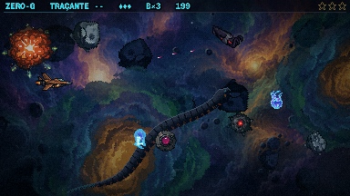
19,9 s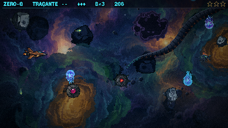
20,6 s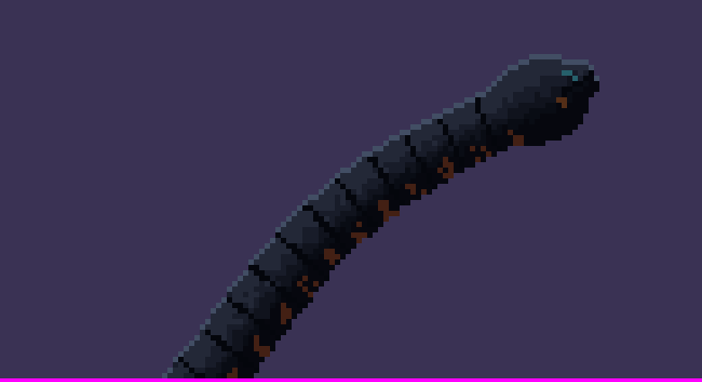
A cabeça dela ampliada 6×, na paleta nova. Para comparar, a B de antes está mais abaixo.
Os golfinhos (o B, a dupla)
A sua resposta: "vai ser o B (dois) só que eles vão chegar da extrema direita e cruzar a tela em diagonal até a parte de baixo [...] quero a silhueta deles nadando iguais a um golfinho e mais rápido do que está, faça pequenas bolhas de rastro quando passarem".
- O caminho: entram por fora da tela, no alto da direita, e descem em diagonal até sair pela borda de baixo, em 3,8 s (eram 8–9). O menor vem 0,35 s atrás e um pouco abaixo. A diagonal é curva: no jogo, a metade direita da câmara é escura (medido), e reta a dupla cruzava quase só o escuro e as peças de baixo, sem chegar a ler. Assim eles entram quase retos pelo alto e descem pelo claro do túnel. No escuro da entrada, o que os desenha é o aro, que ficou um tom mais claro, e as bolhas.
- O nado de golfinho: o caminho sobe e desce em volta da diagonal, como o golfinho que mergulha e volta, e o nariz segue a curva. Para isso o nado aprovado foi girado em cada ângulo (de 5 em 5°) antes de reduzir, e o aro não serrilha. O rabo bate a 14 quadros/s (eram 6). Os dois nadam fora de compasso.
- As bolhas: saem do rabo, sobem devagar (é água), balançam e somem em ~1,3 s. São de 1 px, com alguns anéis de 3 px, na luz da água.
- Ficam na camada mais de trás: as colunas, as mesas e as bordas os escondem quando passam por elas.
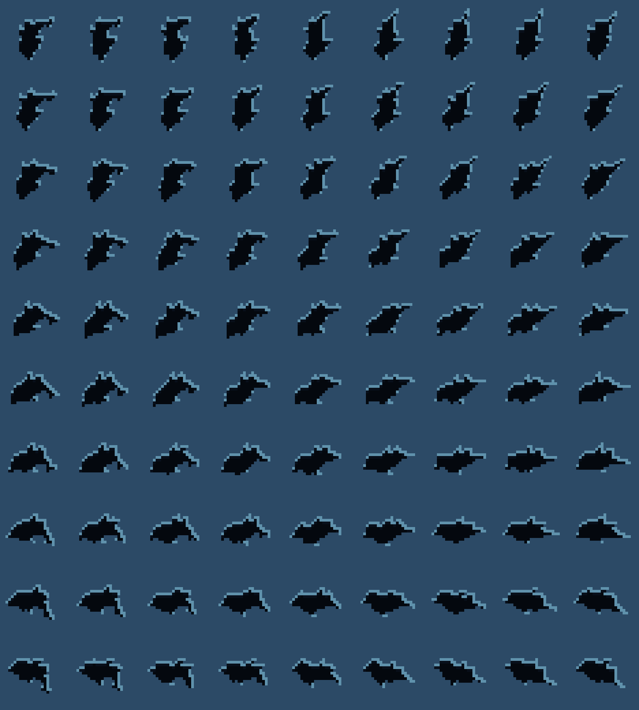
As vistas giradas (o de 20 px, ampliado 6×): cada linha é um ângulo do mergulho, cada coluna um quadro do nado.
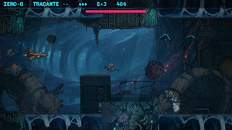
48,4 s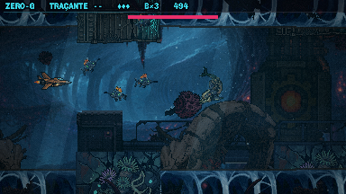
49,4 sA 1ª passagem, aos 7 s do duelo (de 46,8 a 51,8 s da fase). A 2ª, aos 22 s do duelo, é igual.
A enguia em cilindro
A sua resposta: "A enguia que tomou como base está muito engessada e feia, sem movimento. Quero que crie um cilindro que 'nada' igual uma serpente.... ela vai passar rápido mesmo, da borda de baixo até diagonalmente sair no canto superior direito."
- O corpo é desenhado pelo código a cada quadro: um tubo sombreado com a luz vindo de cima, em poucos tons pontilhados. O pontilhado e os anéis andam com o corpo, sem ferver na tela. Tem um fio do aro frio no topo, a cabeça um pouco mais grossa com o olho ciano e a goela laranja, e a cauda afinando até a barbatana ciano.
- O nado de serpente: a cabeça corre a diagonal e o corpo é uma onda lateral que cresce da cabeça para a cauda e corre para trás pelo corpo, um pouco mais rápido do que ela avança. É o "escorregar" de quem nada: a curva muda de forma o tempo todo, em vez de ser uma dobra parada deslizando.
- O caminho: a cabeça sai da borda de baixo (x 70) e o corpo inteiro some no canto superior direito, em 3,6 s (~175 px/s). Passa aos 19 s, como na rodada 1.
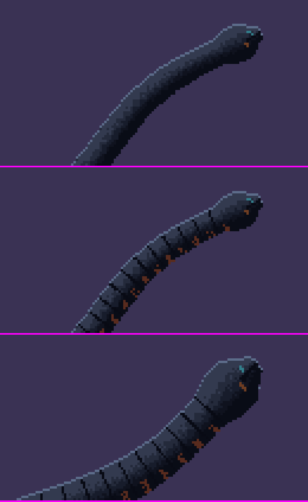
As cabeças ampliadas 6×, de cima para baixo: A, B e C.
A — o tubo
Só o cilindro sombreado, o aro e as luzes. 210 px de comprimento, 12 de espessura.
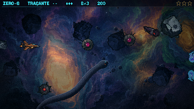
20 s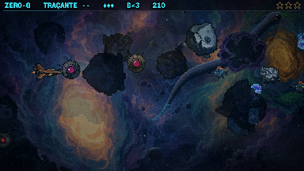
21 sB — com os anéis
O mesmo tubo com as costuras a cada 7 px e o fio laranja entre elas na barriga, como os anéis dela.
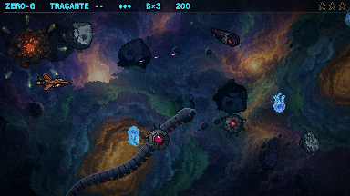
20 s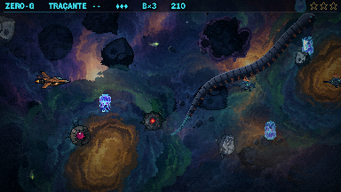
21 sC — maior
280 px e 18 de espessura, com os anéis e uma onda mais larga.
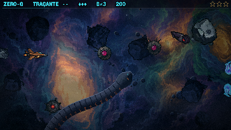
20 s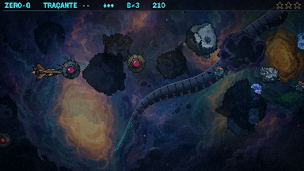
21 sOs vídeos estão no dobro da tela, em velocidade real, de 18,8 a 23,2 s. A nave fica parada e intocável, e os inimigos do roteiro continuam na tela.
Para você decidir
- A enguia: o cilindro serve, ou ela sai de vez? Se serve: A (o tubo liso), B (com os anéis e o fio laranja da barriga) ou C (maior e mais grossa)? E a velocidade e a onda?
- Os golfinhos: o mergulho, a velocidade e as bolhas estão como você pensou?